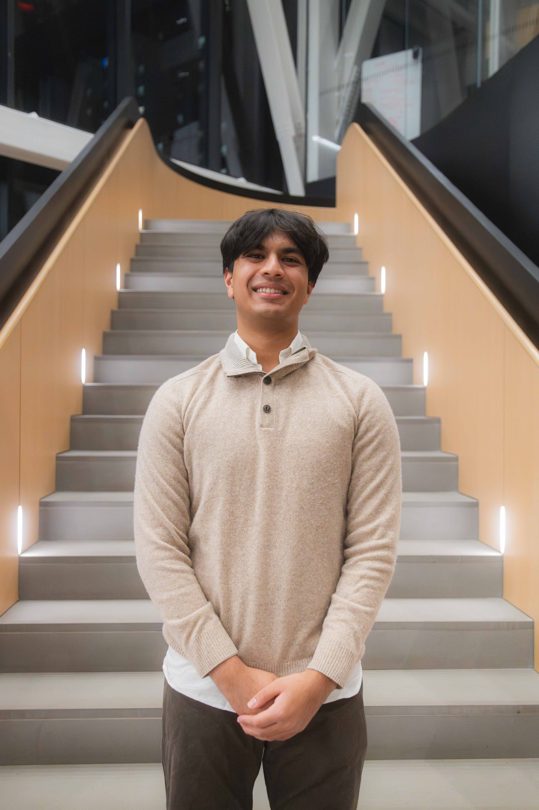

Hello, I’m Keshav Goel, a sophomore at Northeastern University where I started out studying Data Science and Math. Over time, I realized I had a strong interest in data engineering and analytics, particularly in how these tools can impact real-world issues across fields like media and business. My studies gave me a solid foundation in Python, SQL, data visualization, and machine learning, and I’ve been lucky to put these skills to work through various projects and internships. Right now, I’m a research assistant at Northeastern, working in one of our Social Justice Data labs. My main focus is scraping data from the EPA to uncover trends around farm worker mistreatment, hoping that our insights will help raise awareness on the issue. Before this, I interned as an AI Development Intern at VDart Group, where I built an AI-powered recruiter tool using OpenAI, Ollama, MongoDB, AWS, and Snowflake. This experience was invaluable—it taught me how to manage large-scale data systems and build a full-stack data application to support business decisions. I also had an earlier research role where I developed a neural network to detect malaria in blood samples using YOLOv8, increasing detection accuracy by 70%. That project really deepened my understanding of machine learning in a healthcare setting and challenged my problem-solving skills. Outside of all my data learning, I’m involved in an intercollegiate South Indian dance team and AI club. I also love exploring new hiking trails and discovering fresh music.
